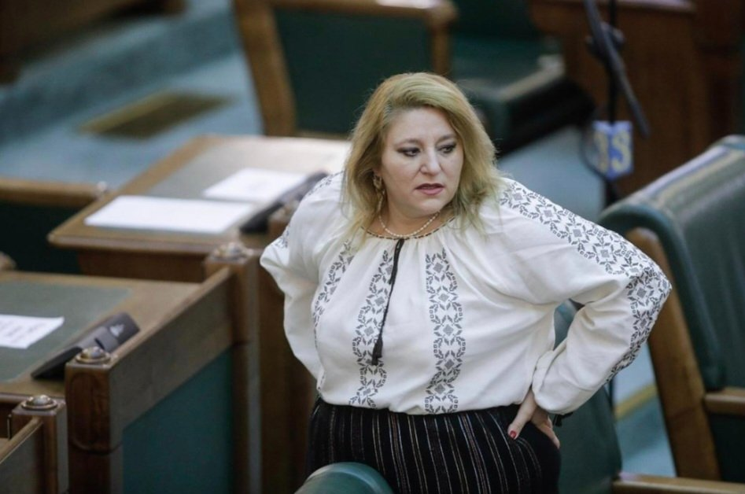
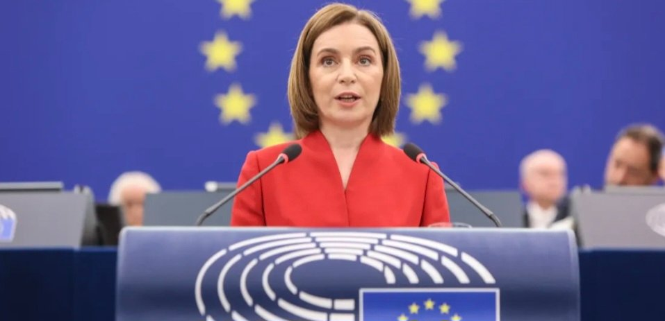

The proposal was introduced by S.O.S. România, led by Diana Șoșoacă, a Romanian politician who has publicly described herself as "pro-Putin" and said she "loves Russia." This is not a Romanian government initiative. The government opposed the bill and issued a negative opinion.

The bill was not approved by Parliament through a vote. It advanced through Romania's tacit adoption procedure, meaning deputies did not debate or vote on it before the constitutional deadline expired. It now goes to the Senate, which has the final decision.
Former Constitutional Court President Augustin Zegrean said the proposal has no real legal effects in its current form. It is far from becoming law and does not represent a change in Romanian foreign policy toward Moldova.
Within hours, Moscow seized on the proposal. Russian Foreign Ministry spokeswoman Maria Zakharova claimed the bill proves Romania wants to "annex" Moldova, arguing this is not unification but a takeover and accusing Bucharest of long-term expansionist ambitions.
The Kremlin's narrative was quickly amplified by pro-Russian politicians in Moldova. Former President Igor Dodon accused the government of betraying Moldova's sovereignty unless it rejected unification.
Moldovan President Maia Sandu dismissed the proposal, saying it should not be taken seriously because it was introduced by what she described as "an agent of Moscow." She argued its purpose is to discredit the idea of unification, not to advance it.

Diana Șoșoacă has repeatedly taken positions favorable to Russia. She met the Russian ambassador shortly after the full-scale invasion, attended RT's anniversary in Moscow, called herself "pro-Putin," and publicly said she "loves Russia."
Weeks ago, Șoșoacă also appeared on Russian state television after the Galați drone strike, questioning Romania's investigation and saying Russia should examine the wreckage — after Romanian authorities had already concluded it was a Russian-made Geran-2 drone.
The story is not that Romania is preparing to unite with Moldova. The story is that a proposal with no government support, negative official opinions, and no immediate legal effect is already being used by Moscow to reinforce its narrative that Romania threatens Moldova.
No major pro-European leader in Romania or Moldova has endorsed this proposal. Instead, it has been amplified by the Kremlin and pro-Russian politicians to push a single narrative that Romania is a threat to Moldova's sovereignty and seeks to "annex" it.
This isn't new sentiment. Over the years, plenty of politicians on both sides have said they'd personally back unification — ex President Băsescu called it his "soul project," Ghimpu and Chirtoacă backed it from the 2000s, Leancă said it was the only way to protect Moldova from Russia, and Sandu herself said on a British podcast in January she'd vote "yes" in a referendum. President Nicușor Dan has shown similar openness.
But none of that has anything to do with this bill. Those are personal opinions, mostly conditional on a future referendum — not legislation. Șoșoacă's bill is a fringe, government-opposed initiative that passed only by procedural default, with zero input from any of these figures. Supporting the idea and legislating it are two very different things, and right now neither country can carry this through economically, legally, or geopolitically.